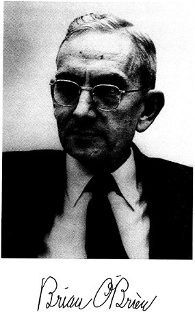

O'Bien naît à Denver (Colorado). Il commence ses études à
l'Ecole Latine de Chicago et les poursuit à l'Université de Yale, où il obtient son diplôme en génie électrique en
et un doctorat en physique , année où il entre comme ingénieur de recherche à
Compagnie Electrique Westinghouse Electric de Pittsburgh (Pennsylvanie), jusque .
Alors que la plupart de son travail consiste en de la recherche scientifique en physiologie, vision humaine et
plusieurs domaines de l'optique, il appliquera toujours sa formation et ses disciplines comme un ingénieur aux divers
projets qu'il entreprendra. Dans ses études sur les effets biologiques de la radiation solaire sur les tuberculeux à
au J. N. Adams Memorial Hospital de Perrysburg (New York), dans les années 1920s, il développe des lampes à arc
spéciales produisant des radiations ultraviolettes améliorées sur les longueurs d'ondes thérapeutiques désirées, ainsi
qu'un processus unique pour irradier le lait afin de produire de la vitamine D. Un de ses appareils rend possible
l'irradiation aux ultraviolets du lait en production en utilisant un rideau cylindrique continu constitué à la fois
d'eau, comme bouclier, et de lait entourant la source ultra-violette, une solution élégante à un problème de
production ardu.
Rochester
En O'Brien part à l'Université de Rochester en tant que professeur chercheur en physique et en
optique. Il y restera pendant 23 ans, devenant directeur de l'Institut d'Optique . Pour nombre
de ses étudiants ces années-là, O'Brien "est" l'institut. Sa présence dynamique et son enthousiasme se communiquent
à ses étudiants comme à son équipe.
O'Brien à l'Université de Rochester,
Pendant la 2nde guerre mondiale, il dirige une croissance énorme de l'institut sous la section 16.2 du programme du
NDRC. Une des activités principales est le développement de
nombreux systèmes optiques militaires, dont des appareils de vision nocturne, un domaine auquel il contribuera à
nouveau dans les années 1950s et 1960s à travers son instigation dans les premiers travaux sur la fibre optique. Les
appareils de la 2nde guerre mondiale incluent le Metascope, un dipositif de vision nocturne utilisant des phosphores
infrarouges, et des systèmes optiques Schmidt ultra-rapides nécessitant le développement d'optiques asphériques en
grande production. Une fois de plus, O'Brien utilise ses talents d'ingénieur pour guider le développement des 2
instruments et les processus spécifiques à leur fabrication. Le programme d'ingéniérie le plus ambitieux est
probablement celui qu'il entreprend après une rencontre improbable avec Michael Todd, le producteur de Broadway.
Todd espère intéresser O'Brien au développement du nouveau processus révolutionnaire de film rivalisant avec le
"Cinerama", utilisé à l'époque dans les cinémas de la ville de New York.
Il devient membre de la Société d'Optique d'Amérique (OSA, dont il reçoit le plus haut prix, la Médaille Frédéric
Ives , et qu'il préside de cette date à ), de l'APS, et de l'Institut des Ingénieurs en Electrique et Electronique.
American Optical
Lorsqu'O'Brien rejoint la Compagnie Optique Américaine (AO) à Southbridge (Massachusetts) en ,
Todd passe contrat avec l'AO pour développer son système, qui devient connu sous le nom de Todd-AO. Ce système
nécessite un nouveau concept de projection grand angle sur un écran fortement courbé qu'O'Brien invente, et le
développement d'un réseau d'équipements spécial pour adapter le film 65-70-mm. Un aspect véritablement unique de
l'entreprise est le processus d'impression du film pour corriger la déformation inévitable produite lorsque l'on
projette une image sur un écran incurvé depuis une cabine de projection élevée. Pour tout cela, il dirige un grand
groupe d'ingénieurs en optique et en mécanique (et quelques types de recherche) pour réaliser cette tâche
intimidante. Le haut niveau technique des présentations de film extra-larges aujourd'hui peut être considéré comme
un dérivé du processus Todd-AO.
Au milieu de ce programme, O'Brien initie également un projet pionnier sur la fibre optique à AO. Avant de quitter
Rochester, il a découvert la clé d'une transmission de lumière efficace dans des fibres optiques, c'est-à-dire,
l'utilisation d'un indice d'un enduit à indice de réfraction fiable sur le "cœur" de la fibre. Avec ce concept de
base, la fibre optique commence à devenir une technologie utilisable, qui débouche au final en une industrie majeure
centrée autour de la zone de Southbridge. Une des applications les plus importantes de la fibre optique se révèle
être sous la forme de fenêtres (faceplates) pour les tubes d'intensification de vision nocturne militaire.
Consultant
O'Brien

O'Brien part en retraite de AO , mais va poursuivre sa carrière de physicien consultant jusqu'à
quelques années avant sa mort.
Durant cette période il sert comme président de la Division des Sciences Physiques du NRC à Washington, D.C., membre du Conseil de l'Université de Yale, et président du
comité de conseil de la Division de Météorologie du NBS.
Air Force
En , à la demande du général Ben Schriever, il forme le Comité d'Etudes de l'Air Force du NRC afin de fournir un conseil et une
orientation scientifiques à l'AFSC. Il est également de l'AFSAB de . A cette occasion il présidera un comité sur les ovnis qui recommandera la création du projet Colorado. Il reçoit par 2 fois le Prix pour
Service Civil Exceptionnel de l'Air Force, et .
NASA
En la NASA lui demande de former le Comité de Conseil du
Programme Spatial afin de la conseilller sur les programmes futurs. Il est également membre du Comité sur les
Sciences de l'Espace du NRC. Il reçoit la Médaille du Service Public Distingué de
la NASA en .
Atteint d'incapacités physiques dans ses dernières années mais toujours mentalement alerte, O'Brien meurt dans son
sommeil chez lui à Woodstock (Connecticut).
Références :
Walter P. Siegmund et F. Dow Smith, "Brian O'Brien?Pioneer in Optics," Optical Society of America, Optics and
Photonics News, Mars 1993